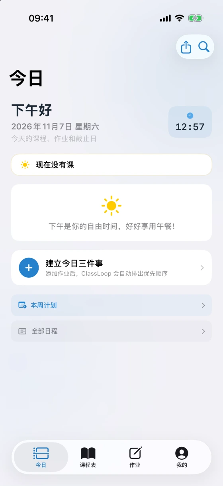

01 / 开学排课
一周的课，摊开来看。
粘贴课程文本、导入 CSV，或用同学发来的课表分享码。导入前可以预览，首次完整课表导入免费。

功能介绍
开学导入课表，课间查下一节课，回到宿舍再看看这周要交什么。
01 / 开学排课
粘贴课程文本、导入 CSV，或用同学发来的课表分享码。导入前可以预览，首次完整课表导入免费。
02 / 每天查课
「今日」汇总当前课程、下一节课和当天待办。还可以把课表小组件放在主屏幕上，课间随手看一眼。

03 / 作业与考试
把作业、测验和考试记下来，设置截止日期和提醒。在七天计划里对照课表，提前给忙的那几天腾出时间。
本周待办 示例
04 / 专注与回顾
从待办里选一项作业，开启专注计时。结束后回看投入了多久，以及哪些任务已经完成。
一次专注 示例
把专注时间记到对应作业下
CLASSLOOP PRO
按截止日期和每天的任务量，自动给出未来七天的学习建议。新学期可以复用课表，学期结束可以导出高清报告。
每月续订
适合想按月使用 Pro 的同学。
每年续订
适合想在整个学年使用 Pro 的同学。
一次付费
一次购买，长期使用 Pro，无需续订。
在 ClassLoop 的「设置 → 账户与 Pro」查看方案。价格和优惠资格以 App 内购买页面为准。订阅会自动续订，管理及取消方式见使用条款。
前往 App Store